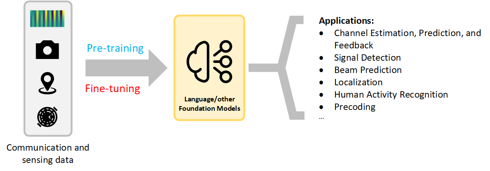

Sensing-Aided Communications: Beam Prediction and Localization in High-Mobility Scenarios
Status: Ongoing (2024.12 - Present)

My recent work focuses on sensing-aided communications in high-mobility scenarios such as V2I and UAV systems. The main goal is to exploit the complementary information carried by vision, radar, LiDAR, GPS, and wireless signals themselves to improve beam prediction and localization in mmWave systems. Rather than relying only on historical channels or repeated beam training, I am more interested in enabling the system to use environmental sensing to understand the physical causes of link evolution, leading to more proactive and robust wireless decisions.
There are two main reasons why this problem matters. First, in mmWave V2I systems, narrow beams provide high gain but are also highly sensitive to mobility, blockage, and environmental changes. Traditional beam training and alignment incur large overhead and often fail to react in time under fast dynamics. I therefore want to use historical sensing information to predict future beams directly and reduce repeated sweeping. Second, purely wireless observations often behave more like a delayed reflection of the link state, whereas sensing data can more directly reveal the geometric causes of link evolution, such as scene structure, target motion, and blockage changes. This motivates a shift from passive adaptation based on historical wireless feedback to proactive prediction based on environmental information.
How This Research Progressed
1. Starting from a single visual modality
In BeamLLM, I first asked a restrained but important question: without using historical beam indices, AoD, or other extra wireless priors, can future beam prediction be achieved using only historical RGB images observed at the base station? The answer from this work is yes. BeamLLM extracts vehicle bounding-box sequences through object detection and then uses reprogramming and prompting mechanisms to map visual temporal features into a representation space suitable for large-model-style processing, enabling vision-only beam prediction. The key message is that on realistic V2I data, environmental sensing itself already contains useful information about future beam evolution.
2. From single-modal to multimodal modeling
In M2BeamLLM, the research moved from asking whether vision alone is feasible to asking how multimodality can improve robustness. This work introduces four sensing inputs: images, radar, LiDAR, and GPS. Their features are encoded, aligned, and fused, and then a supervised fine-tuning pipeline built on GPT-2 is used for future beam prediction. Compared with BeamLLM, the main contribution is not simply adding more modalities, but showing that under complex dynamic environments, any single modality can fail due to blockage, lighting, or local sensing breakdown, while multimodal complementarity significantly improves accuracy and stability.
3. Modeling beam evolution and deployment efficiency
In the flow-based beam prediction work, the focus moved beyond which modality or backbone to use and toward how to model beam evolution itself. This work argues that discrete sequential predictors such as RNNs and LSTMs tend to accumulate errors over long horizons, while large models, although powerful, are less friendly to edge deployment. The paper therefore models future beam evolution as a vector field in a continuous latent space, and uses rectified flow together with a terminal flow constraint to improve long-horizon stability while significantly reducing inference latency.
4. Extending the cross-modal idea to localization
This research line naturally extended from beam prediction to localization. Here the task is no longer predicting a future beam, but performing 3D localization using CSI and visual images together. The main observation is that vision provides clear scene and geometric cues but may suffer from missed or false detections, while wireless CSI is also vulnerable to multipath and NLOS effects in complex propagation environments. Neither modality alone is sufficiently robust, but cross-modal alignment and fusion can substantially improve localization accuracy. In that sense, the localization work continues the same core idea: different modalities provide complementary views of the same physical scene, and this complementarity can be converted into more robust communication-aware perception through learned shared representations.
Core Idea of This Research Line
In highly dynamic V2I scenarios, future beam or position states are not merely continuations of historical wireless observations. They are jointly shaped by scene geometry, target motion, and multimodal observation conditions. Therefore, instead of relying only on historical channel sequences, a more meaningful direction is to incorporate environmental sensing and design suitable cross-modal modeling mechanisms that connect seeing the environment with understanding wireless evolution.
More specifically, this line keeps advancing along three themes: first, using sensing to replace or complement pure wireless feedback so that the system becomes predictive rather than reactive; second, aligning and fusing cross-modal representations so that complementary views of the same scene can be effectively exploited; and third, balancing prediction performance with deployment efficiency so that the methods are not only strong on offline metrics but also promising for real RSU and edge deployment.
Representative Works
- BeamLLM: Vision-Empowered mmWave Beam Prediction with Large Language Models
Shows that future beam prediction can be achieved using only historical visual observations from the base station, and explores the feasibility of LLM-inspired temporal modeling for this task. - M²BeamLLM: Multimodal Sensing-empowered mmWave Beam Prediction with Large Language Models
Extends beam prediction from a single visual modality to multimodal fusion of image, radar, LiDAR, and GPS, improving robustness and prediction accuracy in complex environments. - Rectified Flow for Vision-Aided mmWave V2I Beam Prediction
Models future beam evolution as a continuous flow, balancing long-horizon stability and edge deployment efficiency. - Multimodal Radio and Vision Fusion for Robust Localization in Urban V2I Communications
Extends the cross-modal complementarity idea to CSI-vision fusion for localization, improving accuracy and robustness in complex urban environments.